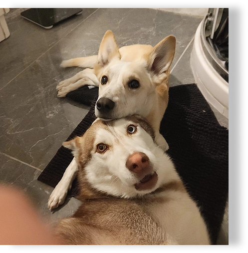
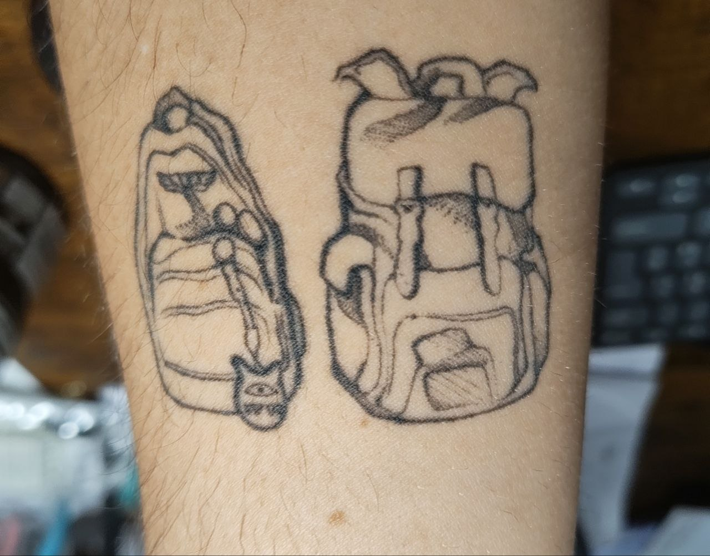

Let's skip the formalities.
Here, I'll tell you a little more about the person behind the work.
01 What are you like when nobody's watching?
I'm a slow person, not in a bad way, but in the sense that I like to take my time and do things without rushing. I also tend to narrate what I'm doing out loud, sometimes making jokes to myself and then laughing at them. But I'm often a bit of a melancholic dreamer, too. When nobody's watching, I sing as badly and as loudly as I want, because apparently being able to sing is optional. I'm messy, easily distracted, and can lose hours getting completely absorbed in something that catches my interest.
02 Who's usually around when you're not working?
I could say my boyfriend, but no, I always have my two dogs around: a dramatic husky (Nala) and a cowardly mixed-breed (Mimir).

03 What always makes you laugh?
I laugh way too hard when people trip over their words—and I don’t mean grammar mistakes, I mean when someone completely stumbles over themselves. Obviously, I'm always the first one it happens to.
04 What's something you could talk about for hours?
My dogs, all the things I daydream about doing, how great sleeping is, and how unfair the world is.

05 What's your comfort TV show?
All comedies, but The Big Bang Theory probably takes first place. In fact, I rewatch them all on a loop, one right after the other.
06 What's your favourite video game?
The Last of Us (I even have a tattoo of it).

07 What fictional character would you be friends with?
Too many. I'll name a few, and I’d probably regret being friends with them, but: Sheldon, Michael Scott, Jake Peralta, Chandler.
08 What's your most useless talent?
Making a cloverleaf shape with my tongue.

09 Would you rather fight one horse-sized duck or a hundred duck-sized horses?
Definitely a hundred duck-sized horses. Have you ever tried reasoning with a giant, psychopathic fowl? At least with the tiny horses, you can kick your way through a stampede like an action hero.